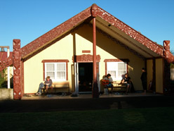
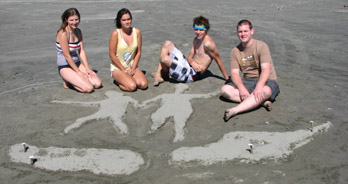
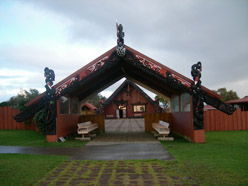
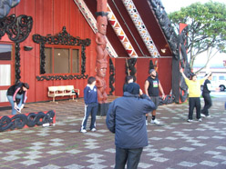
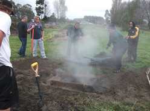
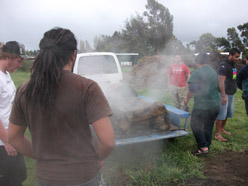

Block Courses
The course was conducted through five block courses held throughout the country every seven to nine weeks. This was frustrating because it meant that there was a one to two week gap in everything I was running. I had to make sure if the programs I was running gained any momentum during a term there were other people on the team to run them while I was away. This style of learning was helpful because it taught me that things still run even when I am not there and it was a refreshing way to get away from my agency for a bit of a break.
Block One: Levin/Wellington
 The first block was a new experience. We all met at Levin New World, were split into our process groups (we had no idea what theses were) and we were immediately given the challenge of buying dessert for one dinner during the block course. This course challenged us and began the process of reflection and bonding with our process groups.
On this block course I stayed on a Marae for the first time. It was an eye opening experience. This was the first step in a year-long process of engaging with the half of New Zealand culture that is glossed over in everyday life. I was unsure how to reflect on the block course after it had happened. I felt it was just a surreal experience and it took me a while to connect the experience of the block course to real life when I got back.
Block Two: Auckland
This was the least enjoyable block course for me. The pressure of having to deliver the community profile was quite high as the block course approached which eliminated any chance of getting excited about it.
There were two major highlights from this block course: hearing from Grant Hawk and the racism debate.
We had the pleasure of hearing from Grant Hawk on the first night of staying on Orakei Marae. Hearing from the lead protester of the Bastion point protests on the site of the protests was a huge honor. As a historian it was great to actually hear from a primary source about the protest and the reasons behind it as well as the lifestory of the lead protestor.
The initial racism debate that was held on the Tuesday night sparked a huge stir amongst the students. The debate was mediated by a tutor who was coming from one side of the argument which left a lot of the Pakeha students feeling stink about being Pakeha. In my own reflection later I valued the experience because I was able to see how Maori in New Zealand have felt during debates since 1840.
Block Three: Wellington
This block course was the cruisiest block course and the most enjoyable. It involved two weeks of classes on topics like human development as well as an ABL at Mana College. I found that the second week involved a lot of catching up on school work because many of the students had got a bit behind. I found this slightly frustrating as I had completed the prescribed work. I ended up just offering my services in helping people with their assignments.
Block Four: Christchurch
Block Four was in Christchurch. There was one week of National Block and then a few days of Regional Block. The main part of it was held at Wai Ora Trust. This was a fantastic venue and I was able to take part in my first hangi ever.
This block course felt like a waste of my time because, like the previous one, many people had not been able to complete their assignments. I took on the role of attempting to help those that did not have the benefits of my previous education to get through some of the harder assignments.
Besides the training at these block courses the highlights were the interesting experiences. The highlights of this block course were visiting the Buddhist Temple and the Addington Coffee Co-Op. The Buddhist temple was a great insight into Thai culture and an awesome opportunity to look at another belief system. (I do not think Buddhism can be considered a religion because they do not believe in a God). The Addington Co-Op was an awesome look into an Christian intentional community doing life and business in a unique way.